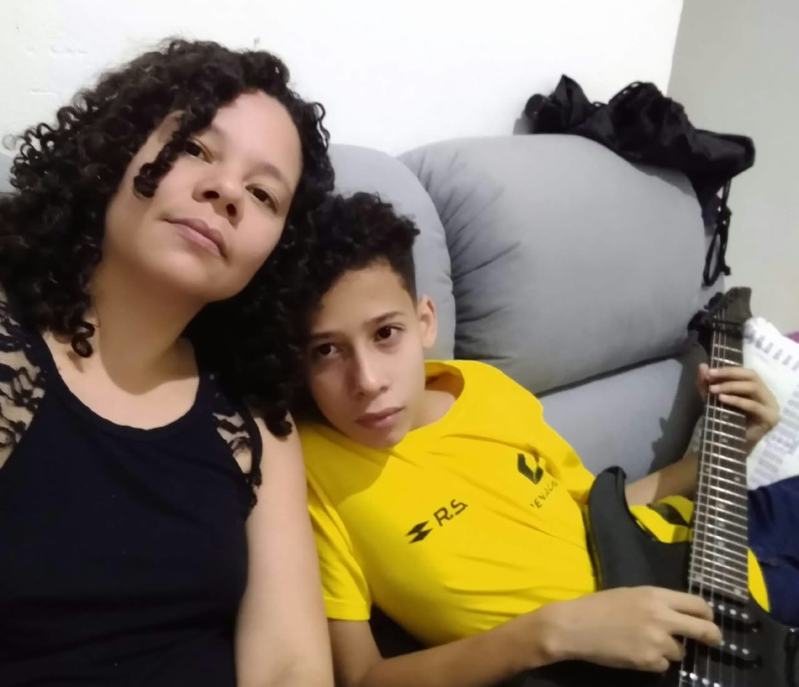

02 // PRIMEIRO CONTATO COM O BARULHO
EUFORIA
EUFORIA
E REVOLTA.
10–13 ANOS // HARDCORE PUNK
Na pré-adolescência descobri o punk e o hardcore, com Dead Kennedys e Suicidal Tendencies. Era uma música rápida, agressiva e que não pedia permissão para existir.
Foi também quando ganhei minha primeira guitarra e comecei a experimentar os primeiros riffs, numa mistura de euforia e revolta.

O SOM DA REVOLTA